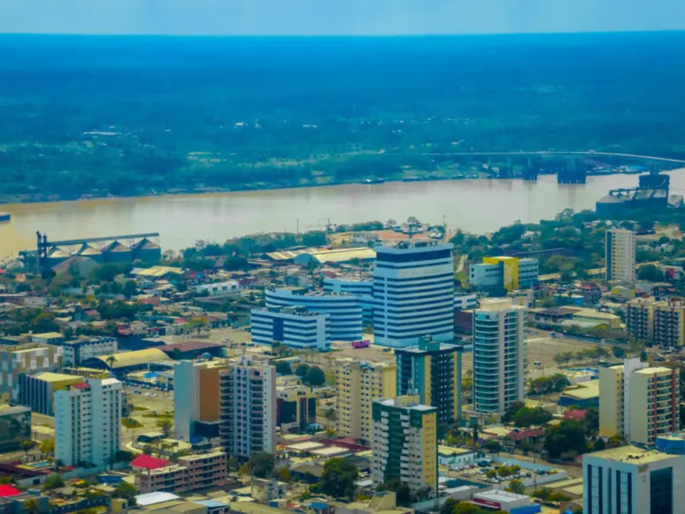

O Pará é o estado mais populoso e economicamente dinâmico da Região Norte, funcionando como uma ponte estratégica entre a Amazônia e o restante do Brasil. Sua capital, Belém, é famosa por sua arquitetura colonial e pelo Mercado Ver-o-Peso, sendo considerada a capital gastronômica da região com pratos icônicos como o pato no tucupi e a maniçoba. O estado possui uma geografia diversa, que inclui desde as praias fluviais de Alter do Chão até a vastidão da Ilha de Marajó, a maior ilha fluviomarítima do mundo. Na economia, o Pará lidera a produção mineral nacional e o extrativismo vegetal, enquanto sua cultura é pulsante, movida pelo ritmo do carimbó e pela grandiosidade do Círio de Nazaré, que atrai milhões de fiéis todos os anos.
